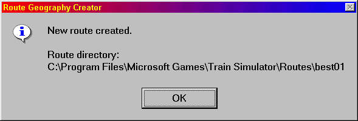

Restart the MSTS Editor and Tools. Launch the Route Geometry Extractor.
The Route Geometry Extractor window opens. Click File | New Route
This displays the Create New Route dialog box. Type in all the stuff you want in the boxes.
In the Route Name field, type the new route’s name and description (such as “The Best Route of All”). If you wish, you can click the Edit description button, type a route description, then click OK.
This name will appear in the list of routes when you run MSTS.
In the Directory name field, type a short name (such as “best01”). To make Train Simulator routes more self-contained and easier to share with others, each route has its own directory of required files (including configuration files, terrain, shapes, textures, etc.). This directory name is the new route’s unique identifier, and the title of the route information folder that is generated when you create a new route.
Press "Ok". After a short time, MSTS RGE will tell you.....

Click File | Select route. (I assume you know to select the one you just created, even if the extractor is too dumb to automatically go there). This displays the "Select Route" dialog box, with a drop-down list box of available routes. In the Route list box, click the route name you just created, then click OK.
Click File | New Quad-Tree. The Route’s Directory name and “Normal Terrain” appear on the left of the status bar. Nothing else appears, since the quad-tree is still blank. The Quad-tree is the blank sheet on which the RGE tool lays out a grid of potential terrain tile positions.
HERE is where you insert what they left out and as near as I can tell from trying to add it or change it afterwards, you only get one shot at it. Before "New Quad Tree" or after "Add All Selection Tiles" you might as well be trying to get milk from a male ostrich for all the effect it's gonna have.
Edit | Set Height Offset: Defaults to plus one meter if you don't change it here.